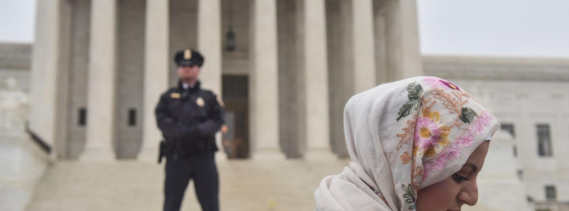

The Muslim Ban
In 2017, former President Donald Trump signed Executive Order Number 13769 which directly impacted immigrants from Muslim-majority countries (Exec. Order No. 13769, 2017; Dennis & Markon, 2017). Immigrants from Chad, Iran, Iraq, Libya, Syria, Yemen, North Korea, and Venezuela were blocked from entering (Exec. Order No. 13769, 2017; Trump v. Hawaii, 2018). Immigrants from Muslim-majority countries were labeled as potential terrorists and thus, a threat to national security (Dennis & Markon, 2017). Politicians and courts have both made derogatory comments towards Muslim American immigrants (Cainkar & Maira, 2005). For example, Trump has stated and implied on numerous occasions that the religion of Islam has a ha-tred of America, making Muslims inherently dangerous to the American peoples. He once said on the campaign trail, “Where this hatred comes from, and why, we will have to determine. Until we can determine and understand this problem and the dangerous threat it poses, our country cannot be the victims of horrendous attacks by people that believe only in Jihad” (Johnson, 2015). Trump is not alone in his beliefs; this quote echoes a sentiment held commonly within the United States population and the governmental offices that determine what rights an authorized Muslim American immigrant may hold (Johnson, 2015).